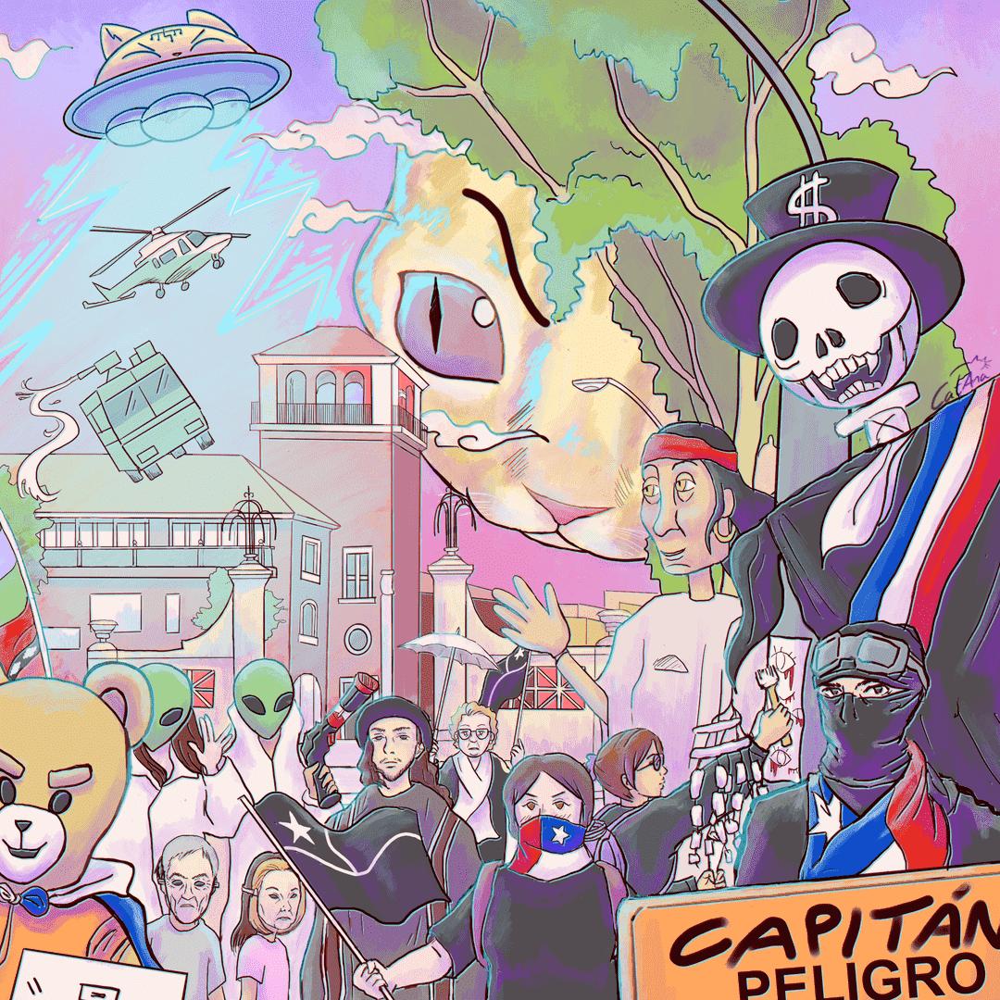
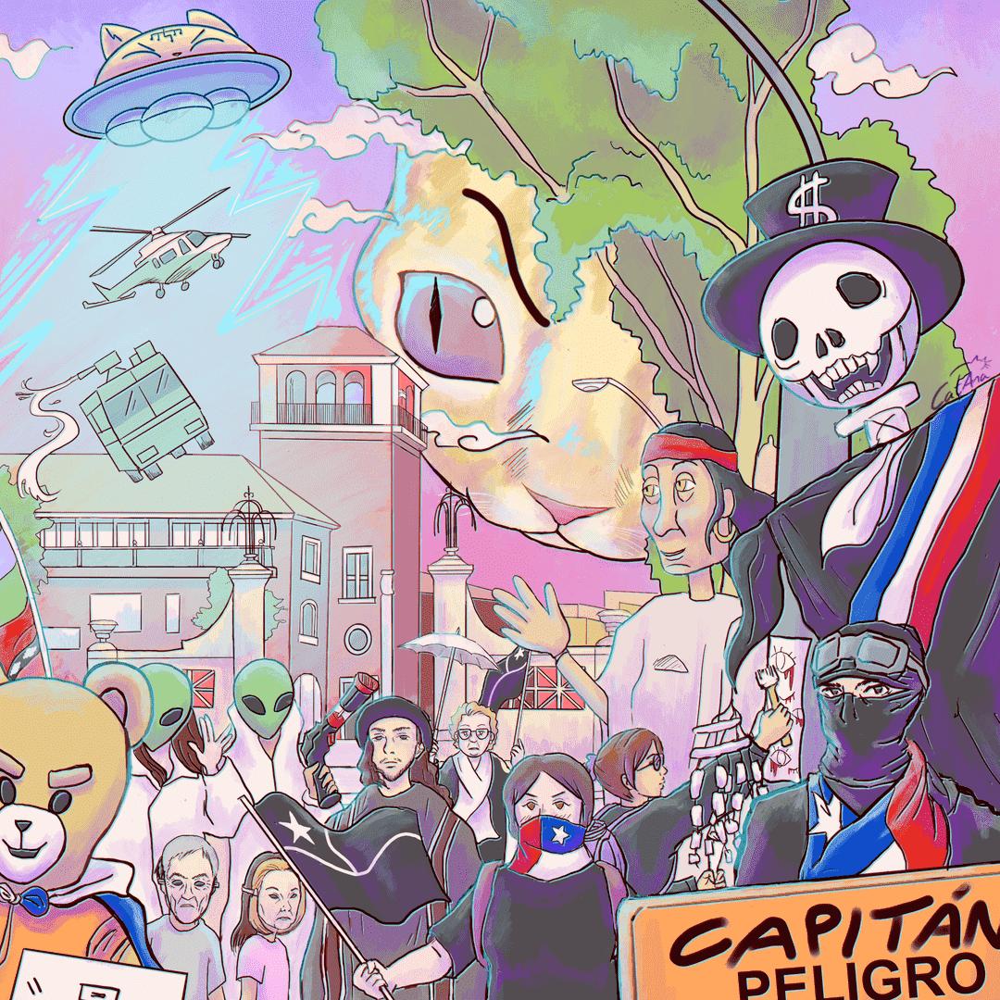
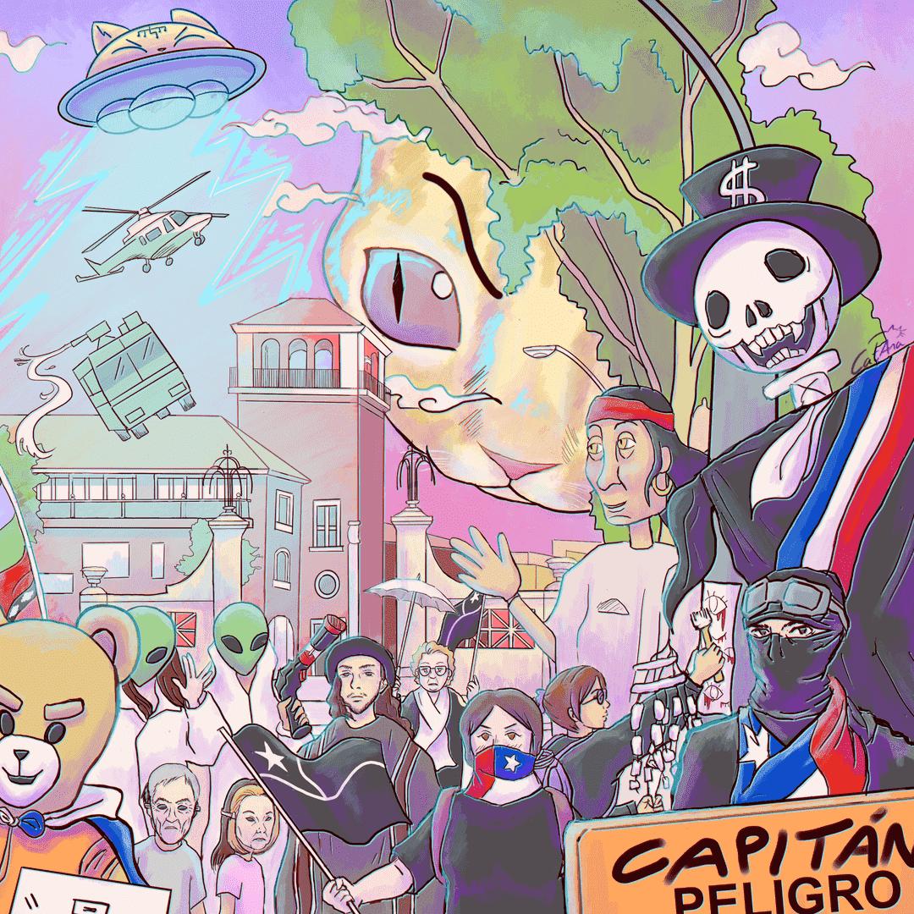

CatAna
IV Región, La Serena
Mi trabajo combina cotidianidad con el imaginario de elementos surrealistas y espaciales, inspirados en la cultura pop y/o la contingencia social.


 
 
IV Región, La Serena
Mi trabajo combina cotidianidad con el imaginario de elementos surrealistas y espaciales, inspirados en la cultura pop y/o la contingencia social.
